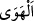
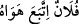

gördün mü?” ifâdesi bazen bildirmek, bazen de soru için kullanılır. Burada ise kötü
duygularını
ilâh
edinen
kimsenin
bilgisizliğine
taaccüb/şaşırma
anlamında
kullanılmıştır.
“
” ikinci mef‘ûldür. Önemine dikkat çekmek için birinci mef‘ûlden önce
zikredilmiştir. Çünkü taaccüb ondan kaynaklanmıştır.
“
” sevmek, arzu duymak demektir. Sonradan övülen bir şey olsun yerilen bir şey
olsun sevilip arzu duyulan şeylere isim olmuştur. Fakat daha sonra kötü arzuları ifâde
etmek için kullanımı yaygınlaşmıştır. Mesela bir kimseye yerilmek istendiğinde “
Falanca hevâsına uydu” denilmiştir. Şu halde hevâ, insan tabiatının meylettiği
ve nefsin naklî ve aklî bir delil olmaksızın sırf istek duyarak arzuladığı şeydir.
Âyetin mânâsı ise şöyledir: ‘Ey Muhammed! Hevâsına itâat ederek onu kendisine ilâh
yapan, huccet ve burhâna kulak vermekten yüz çevirerek dînini onun üzerine binâ eden
kimseyi gördün mü?!’ Sanki şöyle buyrulmuştur: ‘Sen hevâsına itâat edip ona muhâlefet
etmeme konusunda hevâsını ilâh mevkiine koyan kimseye şaşmaz mısın? Sen o kimseye
bak da taaccüb et!’ Âyetteki soru, pekiştirme ve teaccüb içindir.
Denildiğine göre âyette bahsedilen kimseler taşa tapan bir Arap kavmi idi. Ne zaman
güzel bir taş görseler ve onu isteseler, ona secde ederler, ellerinde bulunanı
atıverirlerdi. Hâris bin Kays o kavimdendi. Kervanla giderken, yanlarındaki taş devenin
üzerinden düştü. Kafileye seslendi ve tapınılan taşın düştüğünü, kervanı durdurup onu
aramak gerektiğini söyledi. Bir müddet aradılar, bulamadılar. İçlerinden birisi: “Ondan
daha güzel bir taş buldum” diye bağırdı.
Bir hadiste: “Hevâdan daha fazla Allah’ın gazabına sebeb olan bir ilâha ibâdet
edilmemiştir.”[222] buyrulmuştur.
et-Te’vîlâtü’n-Necmiyye’de der ki: “Şerîatı uygulamak sûretiyle de olsa nefsânî bir
yol üzerine yaşayan, rabbânî hakkları değil, nefsânî hazları elde etmeyi arzulayan herkes
hevâsına kulluk yapmaktadır.”
Kâşifî der ki: “Te’vîlât müellifi şöyle der: Kim Allah’tan başka bir şeyi sever ve bu
yüzden Allah sevgisinden geri kalır ve ona taparsa, gerçekte o kimse kendi hevâ ve
hevesine tapmış olur. Çünkü o kimsenin hevâsı onu Allah’ın gayrısına muhabbet etmeye
yöneltir.
Seyyid Hüseynî (r.h.) Tarabü’l-mecâlis’te şöyle der: Hz. Âdem Safiyyullah Havva
ile nikâhlanınca, onların birbiriyle imtizâcından insanoğlu meydana geldi.
Kalkan her toz, onun yolu ortasındadır
Ne söyleyeyim, her Yusuf ’un kuyusu odur
Hevânın galebe gücü o derecedir ki, “Yeryüzünde (Allah’tan başka) tapılan ilk ilâh
hevâdır.” hadîsi onun hakkında vârid olmuş, Kur’an diliyle onun hakkında: “Hevâsını
kendisine ilâh edinen kimseyi gördün mü?” buyrulmuştur. Sanki hevâ asıldır da bâtıl